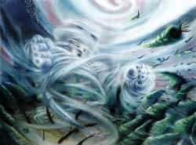

Challenges
The Mercusian Challenge
The size of the dwarves can relate to how they structured their race. The race includes a series of small cramped tunnels looking for specific objects for each team. Different objects are placed all around the tunnels, and each team has to get the correct number, going back and forth until they get the right one. The first team to get eight objects, one from each team member, wins.
The Venusian Challenge
When it comes to the elves race, it also embraces fire as much as it can. It starts with a normal track race but instead of a batton, they pass torches. When the final 8th member gets the torch. The 8th member has to go through rigid obstacle course while holding the torch. First team to finish or last one standing with a lit torch wins.
The Earthian Challenge
For the night elves challenge, they ride various animals in an actual race. There are a total of 8 checkpoints, one for each member of each team. In checkpoint one, the first member has a choice of 8 different animals to ride to the next checkpoint and when he get theres, the next member will only have a choice of seven without being able to pick any of the animals that were previously chosen. First team to get passed all eight checkpoints first wins.
The Marsian Challenge
The challenge set on mars is simple, every group of eight competes against one another in an all out battle royale, made up of 64 elementals in total. Each participant is required to knock out as many fighters from the ring as possible. The only rule being no weapons allowed, with the exception of the environmental offerings presented before them. Last team or contestant standing wins.
The Jupisian Challenge
Because of their massive size, the challenge designed by the Frost Giants deals with one of strength. Each tribe is presented with a large block of magnarite, the heaviest building material found on Jupiter. Climate levels will continue to rise and drop in rapid speeds, and while this occurs, participants must throw the block as far from the starting point as they can. Whoever manages to toss the magnarite the farthest, wins.
The Satusian Challenge
The challenge taking place on Saturn is a test for the mind. Each tribe member is presented with a riddle anything from mathematical themes to something maze based. Without helping one another, participants are given a set time frame to complete the challenge. The first to finish wins.
The Urasian Challenge
Like Mars, Uranus's challenge is one of pure fighting. Unlike Mars, Uranus focuses on 1-on-1 combat in which each participant has the option to utilize a weapon, if their opponent agrees. Circular arenas are used to speed up the fights, and as time goes on the arena gets smaller and smaller. This can create an opportunity to knock off challengers. The tribe with the most fighters, wins.

The Neptusian Challenge
The challenge created by the Monarchs is one of tolerance. Utilizing their surrounding environments, each tribe is placed within large storms that slowly start to build up in speed. At this point, it’s all for one. Those who manage to avoid being blown away by the powerful gusts of wind will win the challenge. All are free to utilize objects around them to create an advantage in holding their own.